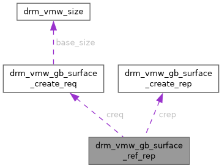

- Generated by
 1.15.0
1.15.0
|
XenevaOS
|
#include <vmwgfx_drm.h>

Public Attributes | |
| struct drm_vmw_gb_surface_create_req | creq |
| struct drm_vmw_gb_surface_create_rep | crep |
DRM_VMW_GB_SURFACE_REF - Reference a host surface.
Puts a reference on a host surface with a given handle, as previously returned by the DRM_VMW_GB_SURFACE_CREATE ioctl. A reference will make sure the surface isn't destroyed while we hold it and will allow the calling client to use the surface handle in the command stream.
On successful return, the Ioctl returns the surface information given to and returned from the DRM_VMW_GB_SURFACE_CREATE ioctl. struct drm_vmw_gb_surface_reference_arg
@creq: The data used as input when the surface was created, as described above at "struct drm_vmw_gb_surface_create_req" @crep: Additional data output when the surface was created, as described above at "struct drm_vmw_gb_surface_create_rep"
Output Argument to the DRM_VMW_GB_SURFACE_REF ioctl.
| struct drm_vmw_gb_surface_create_rep drm_vmw_gb_surface_ref_rep::crep |
| struct drm_vmw_gb_surface_create_req drm_vmw_gb_surface_ref_rep::creq |